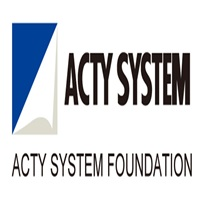

Current chapter
Full Stack Software Developer at RMSI India Limited
Building enterprise applications and GIS-enabled workflows from architecture and APIs through frontend integration and delivery.
Full Stack Software Developer · GIS Engineer
With five years of experience, I turn complex requirements into scalable architectures, reliable APIs, intuitive interfaces, and spatial products built for real-world decisions.
Profile
I combine product thinking, system design, and geospatial expertise to deliver complete software solutions.
Currently
RMSI India Limited · Noida, India
I am a results-focused software developer with around five years of experience building enterprise applications and GIS-enabled products. My work spans system and architecture design, API development, frontend integration, spatial data processing, interactive map tools, and analytical workflows.
My core stack includes .NET Core, ASP.NET Core Web API, Node.js, JavaScript, PostgreSQL, PostGIS, Leaflet, OpenLayers, Cesium, GeoServer, Docker, and cloud platforms. I use AI-assisted development to improve research, implementation, review, and delivery while keeping engineering judgment at the center.
Professional highlights
A concise view of my current role, core strengths, product experience, and direction of growth.
Building enterprise applications and GIS-enabled workflows from architecture and APIs through frontend integration and delivery.
Clean boundaries, practical patterns, stable APIs, and systems designed to evolve.
Spatial datasets, PostGIS, map services, analysis, and interactive 2D/3D map tools.
End-to-end finance platform engineering with live data, APIs, WebSockets, subscriptions, and Docker deployment.
Explore productAdvancing toward RAG, knowledge graphs, cloud AI, and production-focused AI/ML engineering.
Vivek Singh is also known professionally online as Vivek Singh Sikati, Vivek Sikati, and Vivek Kumar Sikati, with roots in Bihar, India.
Core expertise
Each capability connects strategy, implementation, and measurable product outcomes.
Translating business requirements into modular, scalable, and maintainable solution structures.
Designing reliable service boundaries and REST APIs that are clear, secure, and integration-ready.
Connecting interfaces, services, and data into responsive workflows that feel simple to users.
Building spatially aware products for disaster, agriculture, forest, smart-city, and public-safety use cases.
Managing spatial datasets and creating interactive map tools for exploration and decisions.
Converting operational and spatial information into useful patterns, insights, and visual decisions.
Using modern AI tools thoughtfully across discovery, coding, debugging, documentation, and solution exploration—without compromising quality or ownership.
01 Understand the problem
02 Explore with AI
03 Engineer the solution
04 Validate and deliver
Selected work
Product engineering across finance, AI discovery, GIS, public safety, and operational intelligence.
Finance platform · Full-stack ownership
A paper-trading and investment platform with live market updates, user and subscription management, transactions, FastAPI caching, WebSockets, and containerized deployment.
AI ecosystem · Learning
An exploration and comparison platform that helps users discover AI tools, understand their capabilities, and follow emerging technology and AI news.
Emergency response
Spatial decision-support application integrating map services, analytical layers, and interactive tools for disaster response workflows.
Agriculture intelligence
GIS-enabled workflows that turn field and spatial data into clearer operational decisions for agriculture stakeholders.
Innovation & validation
Rapid proof-of-concept solutions used to validate geospatial ideas, workflows, and product opportunities.
Public-safety analytics
Data interpretation and mapping capabilities that support pattern discovery and strategic public-safety insights.
Enterprise project details are intentionally limited to respect client confidentiality.
Career journey
Progressing from foundational C# development to full-stack ownership and architecture-focused delivery.
Scanpoint Geomatics Limited · Ahmedabad, India
Scanpoint Geomatics Limited · Ahmedabad, India
Scanpoint Geomatics Limited · Ahmedabad, India
Acty System India Pvt. Ltd. · Ahmedabad, India

Credentials
Continuous learning across cloud infrastructure, programming, and digital platforms.
What's next
I am extending my full-stack, architecture, and data experience into applied AI and machine learning—focusing on systems that make enterprise knowledge easier to retrieve, connect, and use.
My goal is not just to use AI tools, but to architect dependable AI-enabled products around real business data and workflows.
Retrieval pipelines, embeddings, vector search, evaluation, and grounded responses.
Modeling relationships and connecting structured knowledge for richer context.
Deploying secure, scalable AI services and data workflows in the cloud.
Moving from experiments to observable, maintainable production systems.
Engineering approach
Clarify users, workflows, constraints, data, and the outcome that matters.
Define responsibilities, interfaces, data flow, and a practical delivery path.
Implement the complete experience with quality, clarity, and integration in mind.
Validate, deploy, observe, and evolve the solution based on real feedback.